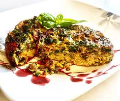

Spinach and Mushroom Frittata

Description
- 2 large eggs
- 1 ½ tablespoons heavy whipping cream
- 1 cup coarsely chopped spinach leaves
- ½ cup diced mushrooms
- ¼ cup shredded sharp Cheddar cheese
- salt and freshly ground black pepper to taste
- Preheat an air fryer to 400 degrees F (200 degrees C). Spray a 4 1/2-inch ramekin with nonstick spray.
- Whisk eggs and cream together in a bowl. Stir in spinach, mushrooms, Cheddar cheese, salt, and pepper until well combined. Pour into the prepared ramekin and cover tightly with foil.
- Air-fry for 12 minutes. Remove foil and air-fry until top starts to brown and a toothpick inserted into the center comes out clean, 4 to 8 more minutes.